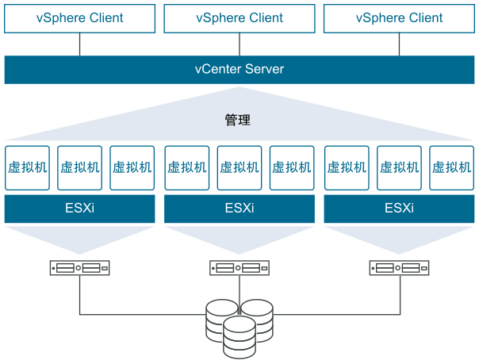
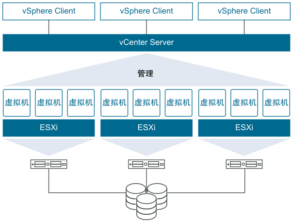

ESXi 的安装与使用
什么是 VMware vSphere
VMware vSphere 是 VMware 的虚拟化平台，可将数据中心转换为包括 CPU、存储和网络资源的聚合计算基础架构。vSphere 将这些基础架构作为一个统一的运行环境进行管理，并为您提供工具来管理加入该环境的数据中心。

VMware vSphere 是 VMware 的虚拟化平台，可将数据中心转换为包括 CPU、存储和网络资源的聚合计算基础架构。vSphere 将这些基础架构作为一个统一的运行环境进行管理，并为您提供工具来管理加入该环境的数据中心。

今天在项目中需要添加一个柱状图，但由于我们的项目是 QT 4.8 的所以不支持 QtCharts。查询了下发现有 QCustomPlot 可以完美的实现需求，使用方法也很简单。
官网：https://www.qcustomplot.com/
下载：https://www.qcustomplot.com/index.php/download
一直在使用 telegram bot 来下载 YouTube 或 twitter 视频，很方便快捷。
关于配置自己的 bot 参考之前的文章：https://blog.niekun.net/archives/428.html
我的应用于 telegram bot 的 YouTube 下载器源码地址：https://github.com/nie11kun/telegram-bot-youtube-downloader
最近想给我的 telegram bot 添加 Instagram 图片的下载功能，但是 youtube-dl 并不支持 Instagram。查询了下发现了 instaloader 这个开源软件可以完美实现我想要的功能。
instaloader 官网：https://instaloader.github.io/
Linux 下，当文件或文件夹包含空格或其他特殊符号如 $，在引用时需要将其放在单引号 '' 或 "" 中，如：
cd '$abc'
cd "abc de f"
当文件以 - dash 开头时，命令会将其作为 option 处理，如：
ls -lh
此时如果需要让命令将其识别为文件名称而不是 option 需要加入 -- 作为参数：
cd -- '-abc'
这样命令就会将 - 开头的字符作为文件名称处理了。
在 JavaScript 中我们通常使用 map method 来对一个 list 的每个元素进行操作：
const numbers = [1, 2, 3, 4, 5];
const double = numbers.map((number) => { return number * 2});
console.log(double)
//output:
//[ 2, 4, 6, 8, 10 ]在 React 中对一个 list 的元素进行操作方法类似。